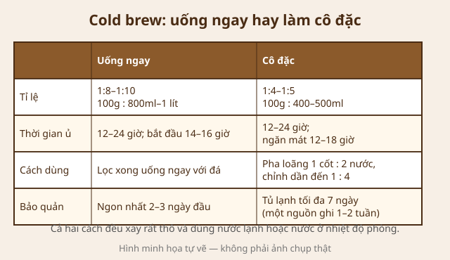

Cold brew tại nhà: ngâm lạnh 12–16 giờ cho vị êm, ít chua
Tác giả: Nguyễn Trung Đức
Tối nay bạn có mười phút rảnh, sáng mai bạn lại vội. Đó là lúc cold brew hợp nhất: việc nặng nhọc duy nhất là chờ. Bạn đong bột, đổ nước lạnh, đậy nắp, rồi để thời gian làm phần còn lại. Sáng ra, bạn chỉ còn lọc và rót. Bài này không bắt đầu bằng định nghĩa, mà bằng ba quyết định bạn phải chốt trước khi đong bột. Chốt sai một quyết định, mẻ sau phải ủ lại từ đầu — vì một mẻ đã ngâm xong không còn cách nào chỉnh ngay trong ly.
1. Ba quyết định chốt trước khi đong bột
Quyết định thứ nhất: uống ngay hay để dành. Nếu bạn chỉ muốn một ly sáng mai, hãy pha loãng sẵn: nhiều nước, ít bột, lọc xong là uống. Nếu bạn muốn một bình dùng cả tuần, hãy pha đặc: ít nước, nhiều bột, lọc xong cất tủ lạnh, mỗi lần uống mới pha loãng. Hai hướng này dùng hai tỉ lệ khác nhau, nên đừng đong bột trước rồi mới nghĩ xem mình muốn uống kiểu nào.
Theo Organic Coffee, cách uống ngay dùng 100g bột với 800ml đến 1 lít nước, tức tỉ lệ 1:8 đến 1:10. Cách làm cô đặc dùng 100g bột với 400–500ml nước, tức 1:4 đến 1:5. Khi uống cô đặc, Organic Coffee pha 1 phần cốt với 1 phần nước hoặc sữa. FLEUR, theo Equator Coffees, cũng bắt đầu từ tỉ lệ 1:4, nhưng khi uống thì pha loãng 1 phần cốt với 2 phần nước, và có thể thêm nước tới tỉ lệ 1 phần cốt với 4 phần nước nếu muốn nhẹ hơn. Hai cách pha loãng khác nhau vì hai nguồn nói về hai kiểu mẻ khác nhau, nên bạn hãy ghi rõ mình đang theo tỉ lệ nào, đừng trộn hai cách pha loãng vào một mẻ.
Quyết định thứ hai: uống trong mấy ngày. Một bình cô đặc không để được mãi. Organic Coffee ghi cô đặc để tủ lạnh được khoảng 1–2 tuần, còn mẻ uống ngay thì nên uống hết trong 2–3 ngày đầu. FLEUR, dẫn Equator Coffees, ghi ngắn hơn: cốt chỉ để tủ lạnh được 7 ngày tối đa. Bài này khuyên bạn theo mốc 7 ngày, vì đó là mốc an toàn hơn khi hai nguồn nói khác nhau. Ghi ngày pha lên nắp bình, và bỏ mẻ nào đã có mùi lạ hay vị chua gắt, đừng tiếc.
Quyết định thứ ba: uống đen hay pha thêm sữa. Câu trả lời này đổi luôn cách chọn hạt ở mục 4. Uống đen thì hạt thơm, chua nhẹ sẽ hiện rõ. Pha với sữa thì hạt đậm, nhiều body sẽ đứng vững hơn, vì sữa làm vị cà phê dịu đi. Chốt xong ba quyết định này, bạn mới cần tới cân và bình.
| Quyết định | Chọn hướng này | Thì dùng tỉ lệ này |
|---|---|---|
| Uống ngay sáng mai | 100g bột với 800ml–1 lít nước | 1:8 đến 1:10, lọc xong uống với đá |
| Làm cô đặc để dành | 100g bột với 400–500ml nước | 1:4 đến 1:5, uống mới pha loãng |
| Mẻ thử đầu tiên | 50g bột với 200ml nước | 1:4, theo công thức của Equator Coffees |
Các con số trong bảng đều lấy từ hai nguồn đã dẫn.
2. Mẻ thử 50g: tối nay làm, sáng mai uống
Mẻ đầu nên nhỏ: 50g bột với 200ml nước, theo công thức của Equator Coffees mà FLEUR dẫn lại. Nhỏ thì hỏng cũng chỉ mất một buổi tối, mà ngon thì bạn đã có công thức gốc để nhân lên. Dưới đây là một buổi tối và một buổi sáng, viết theo mốc giờ, không phải theo danh sách dụng cụ.
Buổi tối, khoảng 21 giờ, bạn xay 50g hạt ở nấc thô nhất của máy, xay xong ủ ngay. Với cold brew, bột càng to càng an toàn: một hạt bột ở đây to gấp nhiều lần bột pha phin, to hơn cả bột French press. Bóp thử một nhúm giữa hai ngón tay, bạn vẫn cảm được từng hạt rời rạc, không dính thành bột mịn. Lý do nằm ở thời gian: bột sẽ ngâm trong nước hơn nửa ngày, nên nếu xay mịn như pha phin, vị đắng sẽ bị kéo ra quá đà, nước đục, giấy lọc cũng tắc vì bã mịn.
Cho bột vào một bình thủy tinh đậy kín, chứa được từ 1 lít trở lên. Đổ nước lạnh vào làm hai lượt: lượt đầu chỉ đủ làm ướt hết bột, khuấy nhẹ cho không còn chỗ khô; lượt sau đổ hết phần nước còn lại, đảo nhẹ thêm một lượt cho bột chìm đều. Đậy nắp kín, dán giấy ghi giờ bắt đầu lên bình. Nắp kín quan trọng khi ủ trong tủ lạnh: không có nắp, cà phê sẽ ám mùi thức ăn trong tủ.
Chỗ ủ có hai lựa chọn. Để bình ở nhiệt độ phòng, bạn ủ 14–16 giờ theo điểm bắt đầu của Organic Coffee — khoảng này đủ dài để vị ngọt hiện ra mà chưa tới mức đắng. Để bình trong ngăn mát, FLEUR ghi 12–18 giờ, còn Equator Coffees khuyên không dưới 14 giờ khi ủ lạnh, cốt đậm dần khi tiến gần 18 giờ. Nước lạnh chiết xuất chậm hơn nước ở nhiệt độ phòng, nên ủ lạnh phải cộng thêm vài giờ. Ủ thêm không làm ly ngon thêm. Sau mốc một ngày, phần đắng và mùi gỗ trong bột nhả ra nhanh hơn phần ngọt, nên ly càng ủ càng nặng và gắt. Dừng ở 24 giờ là đủ; muốn đậm hơn thì tăng bột ở mẻ sau, đừng kéo dài giờ ủ.

Bảng cold brew uống ngay và cold brew cô đặc.
Lọc là bước quyết định ly trong hay đục, và chỉ có một nguyên tắc: để nước tự chảy, đừng nén bã. Ép bã trong lúc lọc đẩy cặn li ti xuyên qua lớp lọc, ly vừa đục vừa đắng hơn. Làm hai lượt: lượt đầu dùng rây hoặc vải để giữ bã to; lượt sau rót qua giấy lọc, nước chảy chậm — nhất là khi bột còn dầu — nhưng ly trong veo uống dễ chịu hơn hẳn ly lợn cợn. Ai ủ bằng French press thì hạ piston thật chậm ở lượt đầu là xong.
Trước khi pha loãng hay thêm đá, hãy thử một ngụm nhỏ, chưa thêm gì cả. Ngụm thử này nói cho bạn ba điều: ngọt đã đủ chưa, đắng có gắt không, hay ly đang nhạt. Sau đó viết một dòng ngắn cho mẻ này: đã dùng bao nhiêu bột và nước, ủ bao lâu, ủ ở phòng hay trong tủ lạnh, và ly uống ra sao. Mỗi mẻ một dòng, vài mẻ sau bạn có trong tay công thức của riêng mình — thứ đó mới đáng giữ, hơn bất cứ công thức chép sẵn nào.
Đồ bạn cần cho mẻ này ít hơn bạn tưởng, phần lớn đã có sẵn trong bếp: bình thủy tinh có nắp, cối xay chỉnh được nấc thô, cân nhỏ để cân cả bột lẫn nước, rây và giấy lọc, ly thủy tinh, đá viên to. Đá to tan chậm nên ly giữ lạnh lâu mà không loãng nhanh như đá nhỏ. Nước thì nên dùng nước lọc hoặc nước đóng chai: nước máy nặng mùi clo sẽ làm vị lạ, vì ủ nhiều giờ khiến mùi lạ càng rõ. Hạt thì mua hạt nguyên rồi xay sát lúc ủ vẫn là cách giữ hương tốt nhất. Bột xay sẵn để lâu mất hương nhanh, ngâm nhiều giờ trong nước lại càng làm vị cũ lộ rõ.
3. Đọc ly: bốn dấu hiệu, mỗi lần chỉ đổi một thứ
Bốn trường hợp dưới đây bao quát hầu hết các mẻ chưa ngon. Với trường hợp nào cũng vậy: mẻ sau chỉ thay đổi một yếu tố duy nhất. Thay đổi hai ba thứ cùng lúc thì không lần ra được thứ nào gây lỗi, mẻ sau nữa lại phải đoán từ đầu.
- Ly nhạt, chua loãng, thiếu ngọt. Hỏi ba câu: ủ đủ giờ chưa, bột đủ chưa, nước có quá lạnh không. Thường là một trong ba. Mẻ sau, kéo dài giờ ủ thêm 2–4 giờ trước; nếu vẫn nhạt, tăng bột lên — từ 1:10 sang 1:8 chẳng hạn.
- Ly đắng, nặng, phảng phất mùi gỗ. Nghĩ tới hạt trước: hạt rang từ lâu là nghi phạm đầu tiên; rồi tới bột xay quá mịn; rồi tới giờ ngâm quá dài. Mẻ sau, dùng hạt mới rang, vặn cối thô thêm một nấc, và rút giờ ủ xuống 12–14 giờ.
- Nước đục, còn nhiều cặn lơ lửng. Ba việc hay gây ra: lọc chỉ một lượt, tay nén bã trong lúc lọc, hoặc bột xay quá mịn. Mẻ sau, lọc hai lượt — lượt đầu rây, lượt sau giấy — để nước tự chảy, đừng nén, và xay thô hơn.
- Vừa lọc xong uống ngon, bỏ đá vào thì nhạt dần. Lỗi ở đá, hoặc ở cốt. Đá nhỏ tan nhanh; cốt loãng sẵn thì đá tan càng làm nhạt thêm. Đổi sang đá viên to, và pha loãng ít nước hơn khi định uống với đá.
Khi một mẻ hỏng, nhiều người đổi hạt ngay — và đó là cách làm mất dấu lỗi nhanh nhất. Đổi hạt đồng thời với đổi tỉ lệ hay giờ ủ nghĩa là mỗi mẻ có hai thứ thay đổi cùng lúc, nên không lần ra được thứ nào gây lỗi. Cách giữ dấu là ngược lại: giữ nguyên một loại hạt qua vài mẻ, chỉ chỉnh tỉ lệ và giờ ủ. Tới khi mẻ đã vừa ý rồi mới đổi hạt để so sánh.
Muốn nhân mẻ thử lên, bạn chỉ cần giữ nguyên tỉ lệ 1:4 của Equator Coffees: 100g bột với 400ml nước cho một người uống vài ngày, 250g bột với 1.000ml nước cho trọn một túi 250g. Tỉ lệ tính theo khối lượng, 1ml nước tính gần bằng 1g. Vì bã ngậm lại một phần nước, cốt thu về bao giờ cũng ít hơn lượng nước bạn đã rót vào.
4. Chọn hạt theo ly bạn muốn uống hết
Không có loại hạt nào là đúng nhất cho cold brew — chỉ có hạt nào hợp miệng bạn nhất. Nước lạnh làm dịu cả chua lẫn đắng, nên hạt nào uống lạnh cũng êm hơn, nhưng theo hai hướng khác nhau. Bạn hãy chọn theo ly bạn muốn uống hết, chứ không theo tên hạt.
Nếu bạn thích ly thơm và chua nhẹ, hãy lấy arabica rang vừa. Vị chua sáng của arabica dịu xuống khi ủ lạnh, ly vẫn thơm mùi trái cây nhưng êm hơn hẳn pha nóng cùng hạt — hợp với người uống đen và nếm kỹ. Lý do là nước lạnh không kéo vị đắng gắt lên như nước nóng: phần êm và ngọt của hạt được dịp hiện rõ, nên arabica — vốn thơm và chua nhẹ — rất hợp cách pha này.
Nếu bạn thích ly đậm và ngọt sâu, hãy chọn robusta, hay blend có robusta, ở mức rang vừa. Bản thân robusta đã dày body; ủ lạnh làm vị đậm ấy êm và ngọt hơn, bớt gắt so với pha nóng. Blend robusta–arabica cũng đáng thử: robusta giữ chất đậm, arabica thêm hương và làm ly mềm hơn.
Về mức rang, người mới nên bắt đầu ở khoảng vừa đến vừa-đậm: hạt rang tới mức này có vị đậm và body dày, ủ lâu vẫn không bị nhạt, pha thêm đá hay sữa cũng đứng được. Rang nhạt hợp với pour over hơn, vì ở đó người ta pha để giữ vị chua sáng và mùi hoa quả. Nhà chỉ có bột xay sẵn cho phin thì vẫn ủ được — với ba điều chỉnh. Thứ nhất, rút ngắn giờ ủ, vì bột mịn ngâm lâu dễ làm nước đục và vị chát. Thứ hai, lọc thật kỹ qua giấy, vì bã mịn khó lọc hơn bã thô. Thứ ba, để nước tự chảy, đừng nén bã. Ly sẽ kém hơn mẻ xay thô đúng chuẩn, nhưng vẫn uống được.
5. Một bình, bốn buổi sáng: cất và uống dần
Lọc xong, bạn cất cold brew vào bình thủy tinh có nắp, để trong tủ lạnh. Sau khi lọc, đừng để bình ở ngoài: hương bay nhanh và cũng kém an toàn hơn khi để lạnh. Mẻ nào đã có mùi lạ hay vị chua gắt thì bỏ đi, ủ mẻ mới.
Từ một bình, bạn có nhiều cách uống mà không cần ủ lại. Cách đơn giản nhất là đen với đá: rót cốt hoặc cô đặc đã pha loãng lên đá viên to rồi uống chậm. Cách thứ hai là pha với sữa lạnh, 1 phần cốt với 1 phần sữa, thêm đá. Sữa cho ly thêm béo và dịu; muốn ly vẫn rõ vị cà phê sau khi thêm sữa, hãy dùng hạt đậm — robusta hay blend có robusta — vì vị của chúng đủ dày để không bị sữa át đi. Cách thứ ba: khuấy đều 1–2 thìa mật ong vào ly — vị ngọt dịu của mật ong không lấn vị cà phê. Cách thứ tư là vắt chút chanh hoặc thả vài lát cam tươi vào ly: vị sáng và tươi hơn, hợp nhất với arabica rang vừa.
6. Ba điều dễ hiểu lầm: caffeine, vị chua và vệ sinh
Êm không có nghĩa là nhẹ. Tính theo cùng một thể tích, mẻ cold brew ngâm 24 giờ có thể chứa nhiều caffeine hơn ly pha 6 phút ở 98°C, theo ghi nhận mà FLEUR dẫn từ Wikipedia. Vì thế, đừng uống cả ngày như uống nước chỉ vì ly này êm.
Ít chua cảm nhận không có nghĩa là ít axit. Một nghiên cứu của Đại học Thomas Jefferson năm 2018, do Niny Rao và Megan Fuller thực hiện, pha hai ly cùng tỉ lệ bột và nước — một ly ủ lạnh, một ly pha nóng — rồi đo. Độ pH hai ly gần như không khác nhau, đều nằm trong khoảng 4,85–5,13. Điểm khác nằm ở tổng lượng axit chuẩn độ và hoạt tính chống oxy hoá: cả hai đều cao hơn ở ly pha nóng. Vì vậy, cảm giác êm khi uống không có nghĩa ly này ít axit hơn — đừng vì thế mà coi cold brew là cà phê dành cho người dạ dày yếu.
Không qua nước nóng nên vệ sinh càng quan trọng. Cơ quan Thanh tra Thực phẩm Canada đã lấy 59 mẫu cold brew để kiểm tra trong khoảng thời gian từ tháng 4/2018 tới tháng 3/2019. Trong 59 mẫu, 15 mẫu có tổng vi khuẩn hiếu khí vượt ngưỡng — chiếm 25,4%, dấu hiệu cho thấy khâu vệ sinh chưa tốt; không mẫu nào có Salmonella hay E. coli. Vì cold brew không qua nước nóng, bạn càng phải giữ dụng cụ sạch và để bình cốt trong ngăn mát suốt từ lúc ngâm cho tới khi uống hết.
Về nguồn gốc, lời kể quen thuộc nhất bắt đầu từ thế kỷ 17: người Hà Lan được cho là đã mang cách pha bằng nước lạnh tới Nhật Bản, và kiểu nhỏ giọt lạnh từ đó mang tên "Kyoto-style". Nhưng Wikipedia chỉ ghi đây là chuyện truyền miệng — chưa có tài liệu gốc nào chứng thực. Phần lịch sử có căn cứ rõ hơn nằm ở Mỹ: cuối thập niên 1960, Todd Simpson, người vừa trồng cây trong vườn ươm vừa làm hoá học, làm ra bộ ủ Toddy sau chuyến đi Guatemala của mình, theo trang The Nibble. Người ta coi bộ ủ này là dụng cụ đầu tiên ở Mỹ làm riêng cho cold brew.
Kết luận
Cold brew là cách pha chậm nhất trong các cách pha cà phê tại nhà, và cũng là cách tốn ít công sức nhất lúc pha — không máy, không nước sôi — mà chỉ đòi hỏi chờ đợi. Bạn hãy bắt đầu từ ba quyết định ở mục 1, rồi làm mẻ thử 50g bột xay rất thô với 200ml nước, cho bình vào ngăn mát 12–18 giờ, lọc hai lượt rồi pha loãng 1 phần cốt với 2 phần nước. Mẻ nào chưa ngon thì đổi một thứ duy nhất; dùng một loại hạt cho tới khi mẻ vừa ý rồi mới đổi hạt khác. Khi mẻ đầu đã vừa miệng, bạn sẽ hiểu vì sao nhiều người tự ủ ở nhà: sáng ra mở tủ lạnh là có cà phê ngon của mình, không cần chờ quán mở cửa.
Nguồn tham khảo
- Organic Coffee (VNO), "Pha Cold Brew Tại Nhà: Công Thức Ủ Lạnh Ngon, Ít Đắng" — cold brew ngâm 12–24 giờ; uống ngay tỉ lệ 1:8–1:10 (100g : 800ml–1 lít), cô đặc 1:4–1:5 (100g : 400–500ml); xay rất thô như hạt đường thô; điểm bắt đầu 14–16 giờ ở nhiệt độ phòng; cô đặc pha loãng 1:1 với nước hoặc sữa; cô đặc để tủ lạnh khoảng 1–2 tuần, uống ngay ngon nhất trong 2–3 ngày đầu (truy cập 24/11/2026): https://organiccoffee.vn/post/pha-cold-brew-tai-nha-cong-thuc-u-lanh-ngon-it-dang
- FLEUR, "Cách làm cold brew tại nhà: tỉ lệ, thời gian ủ" — công thức cơ bản 1 phần cà phê xay thô với 4 phần nước theo khối lượng (50g : 200ml), ủ ngăn mát 12–18 giờ, giữ cốt trong tủ lạnh tối đa 7 ngày (theo Equator Coffees); pha loãng 1 cốt : 2 nước khi uống; độ pH cold brew và cà phê pha nóng gần như nhau, khoảng 4,85–5,13 (nghiên cứu Đại học Thomas Jefferson 2018); khảo sát Canada 2018–2019: 15/59 mẫu (25,4%) có tổng vi khuẩn hiếu khí cao, không tìm thấy Salmonella hay E. coli (truy cập 24/11/2026): https://www.fleur.vn/tap-chi/cach-lam-cold-brew-tai-nha/